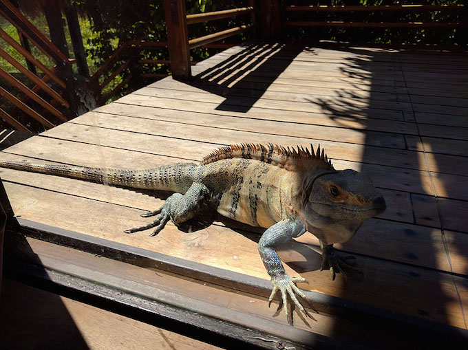
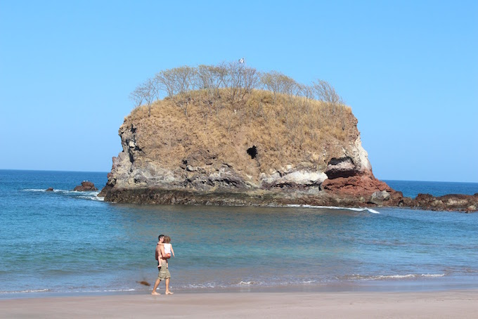
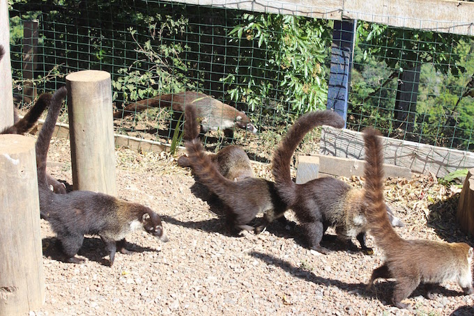
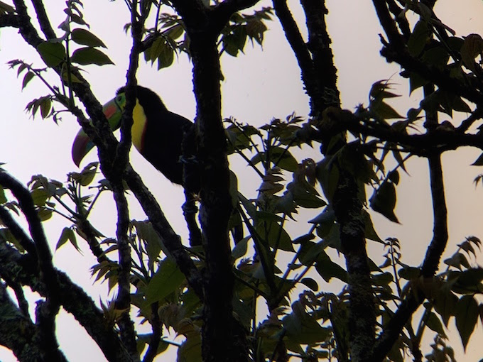

Zaczęło się od banknotu 10 000 ¥ i zaproszenia do Japonii. Specjalny prezent ślubny od Konrada,
który w założeniu miał nas zmobilizować do wyjazdu do Kraju Kwitnącej Wiśni na dwa tygodnie.
Ostatecznie wygnał nas na ponad dwa miesiące do Ameryki Środkowej, a to dopiero początek!
Podróż
Podróż samolotami minęła dość szybko i bezboleśnie, bo lecieliśmy w nocy i można było się po prostu
zdrzemnąć (wielokrotnie). Dziewczynki też nie protestowały i wygodnie rozciągnęły się na swoich fotelach
na ponad 10h lotu (+2h międzylądowanie + 3h kolejny lot)
Po przylocie przywitał nas wschód Słońca (nareszcie! po ponad 20h w ciemnościach) i średnio uczciwa
firma wynajmująca auta.
W końcu bardziej opłacało się wynająć taxi, “po znajomości” (pana ze “średnio uczciwej firmy”!)
udało się ściągnąć małego busa i pojechaliśmy. Taksówkarz “gnał” 80km/h, a droga w wielu miejscach
zatkany była retro ciężarówkami… do tego auto bez klimy, więc podróż trochę się dłużyła… zwłaszcza
rodzicom wymiotującego dziecka (Ala po mamie odziedziczyła dwie rzeczy: chorobę lokomocyjną i dziwne
paznokcie na małym palcu u stóp >_<).
W końcu ok południa dotarliśmy na Playa Flamingo i do naszego nowego domu :)

Widok z balkonu i sypialni :)
Jet lag
Chociaż jesteśmy 7 godzin do tyłu, to jet lag nie był wcale najgorszy, a nawet się przysłużył,
bo przestawiliśmy się bezboleśnie na pobudki o 6 rano.
Dni cały rok trwają tutaj ok 12h, wschód ok 6, zachód ok 18… nuuuda ;)
Video-czat z Barcelona o 5 rano...
Jedzenie
Jest tu dość drogie. Jakby przeliczyć ceny w supermarketach, okazuje się, że wszystko wychodzi
ok 2-3 razy drożej niż w Pl… w restauracjach jest tylko 2 razy drożej :)
...ale jak już się zapłaci, to można zjeść całkiem nieźle. Króluje ceviche (ryba marynowane w soku z limonki/cytryny),
guacamole i “casado”, czyli typowy obiad mężczyzny żonatego (fasolka + ryż + smażony banan + opcjonalnie
kawałek mięsa/ryby). Miejscowi utrzymuja, ze "casado" nazwe zawdziecza temu, ze jest to pierwszy (nie stały)
posiłek po slubie... :)

Pierwsze śniadanie
To kostarykańska włoszczyzna… jakby ktoś wiedział czym są małe okrągłe warzywa z prawej (żółte i
zielone), będę wdzięczna za info!
Zwierzaki nasze domowe
Przede wszystkim X-liardy mrówek, są wszędzie i zawsze. Nawet w muszli klozetowej…
jedzenie można przechowywać tylko w lodówce i dużych plastikowych, zapinanych workach.
Pół godziny nieostrożności i małe paskudy zaraz się częstują. Wyżerają też owoce z miski -_-
Koło balkonu pojawiają się też kolibry, ale tym dość ciężko zrobić zdjęcie w domowych warunkach.
W domu mamy też czasem pająki...

...i jaszczury :) To ponoć najszybszy taki gad na świecie. Samce w porze godowej robią się pomarańczowe.
Jeden taki pomaranczowy grasuje u nas na balkonie, zapewne ze względu na jakże romantyczną scenerię. W efekcie
jesteśmy skazani na takie oto widoki:

Okres godowy!


Czasem można oberwać w głowę gałęzią rzuconą (z premedytacją! ) przez jakąś małpę.
Plaża
zień bez plaży, dniem straconym! Chociaż zwykle wychodzimy z domu dopiero po 15, wcześniej temperatury
i UV są dość ekstremalne…
Chłopaki wynajęli deskę do surfingu i trenują

Mamuśka ćwiczy na sucho, bo boi się rekinów :P


Dzieci są oczywiście zachwycone ogromną piaskownicą
...i tak przyjemnie siedzi się na plaży aż do zachodu :)
...po plaży czas na Coco Loco, albo inne kolorowe koktajle :)

Zdjęcie pt. "o jednego kokosa za dużo"


Żółwie
Na niektóre plaże w okolicy nocami wychodzą żółwie morskie! Co prawda jeszcze żadnego
nie widzieliśmy na żywo, ale znaleźliśmy kilka pasm śladów i gniazdo, z którego dopiero
co wyszły świeżo wyklute żółwiątka. Najczęściej plaże, na które przypływają żółwie są
chronione i można się na nie dostać tylko z przewodnikiem, ale akurat wyjątkowo koło
nas są ogólnie dostępne. Może niedługo zarwiemy jakąś nockę i “zapolujemy” na gady
na żywo :)

Wyspa piratów przy żółwiej plaży
Ślady żółwia

Crossfit z wózkiem

Gniazdo ze skorupkami
Monteverde
Tu, gdzie jesteśmy (półwysep Nicoya) jest dość sucho i gorąco, więc żeby zobaczyć
prawdziwy tropikalny las, musieliśmy wybrać się na weekend do Monteverde
(czyli do Zielonej Góry :P).
Mieszkaliśmy w 30m2 domku w lesie… z sygnałem WiFi :) Koło domu grasował narwany kogut,
kilka razy musiałam go (niestety) potraktować butem :/
Za to koati były bardzo przyjazne. Jedno stado odwiedzało akurat tyły małej restauracji...
niczym rasowi turyści rzuciliśmy sie do okien z aparatami :P
(reszta gości średnio przejeła się widokiem...)

Domek w dżungli

Dani w pracy

Kogucisko :-o (naprawdę był spory)

Stado koati

Jedno koati
Las tropikalny
O 7:30 rano ruszyliśmy do lasu! W Monteverde jest kilka parków,
państwowych i prywatnych, wejście jest płatne i najczęściej z przewodnikiem. Nam też
się jeden trafił i sprawdził się świetnie, prawdę mówiąc bez przewodnika przez
3 godziny pewnie zobaczylibyśmy bardzo dużo drzew i jeszcze więcej mrówek.
Przewodnik przede wszystkim nosił za nami sporą lornetko-lunetę i sprawnie
ustawiał ją za każdym razem, kiedy zobaczył albo usłyszał coś ciekawego.
Poza tym dowiedzieliśmy się też, że niektóre drzewa rosną w dół, storczyki najczęściej
mają po kilka milimetrów, i że nie każda liana jest prawdziwą lianą.
Ruszylismy...

Z przewodnikiem
Zdjęcie rodzinne ;)
Lornetko-lunety i ptak celebryta :D
Ptak celebryta

Keel-Bill tukan

Z parku kolibrow

Mini awokado...
...i mini-storczyk